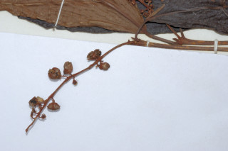
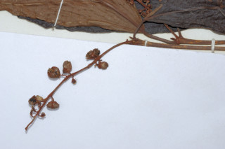

Images :


 

| Habit : | Trees up to 8 m tall. |
| Leaves : | Leaves simple , with opposite , decussate , unequal pairs; petiole 0.3-2 cm, canaliculate ; lamina 6-14.5 x 2.5-6 cm, elliptic to obovate , acute to shortly acuminate , base acute , margin entire or distantly dentate , glabrous , densely resinous yellow glandular beneath; secondary_nerves 7-9 pairs, basal pair short and opposite . |
| Inflorescence / Flower : | Flowers unisexual ; inflorescence slender racemes , to 10 cm long, pedicels 0.5 cm long. |
| Fruit and Seed : | Capsule 2-lobed , smooth, glandular ; seeds 1 per lobe . |